The Plants
A small patch of forest contains thousands of trees, while a golf course is covered in millions of individual grass plants. Plants are ubiquitous in cities as well as in rural settings, indoors and outside.
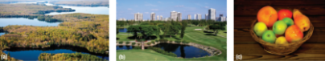
With more than 270,000 known species, plants are fascinating and incredibly diverse. The largest plants tower more than 100 m into the air, and the smallest are little more than a millimeter across.
2.png)
Why Plants are Important
Plants can survive in many different climatic conditions, from hot and humid tropics to parched deserts and the extreme cold of the High Arctic. Because plants are producers of food, other terrestrial life forms follow wherever plants live.
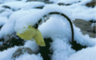
These Arctic poppies are found in Arctic and High Arctic climates, including Baffin Island.
In addition to supporting food webs, plants also provide other organisms with places to live, such as nesting locations for birds and supports for a spider’s web.
Humans are particularly dependent on plants for a wide range of valuable substances including medicines, clothing, wood, and paper products.
Unfortunately, many of the world’s plants are threatened with extirpation or extinction. Habitat destruction, invasive species, pollution, and climate change all pose serious threats to plants and the organisms that depend on them.
Classification and Phylogeny
Plants are thought to have evolved from charophytes, a group of green algae (which belong to the kingdom Protista), between 425 million and 490 million years ago.
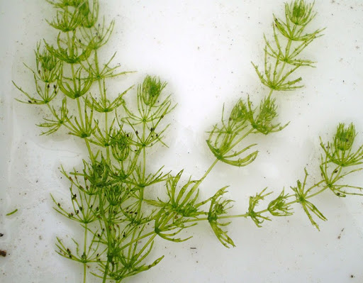
Plants and green algae both contain chlorophyll a and chlorophyll b, two forms of the green pigment used in
photosynthesis. They also contain pigments that are not found in other photosynthetic eukaryotes.
2.png)
Plants and green algae share several other characteristics. At the end of mitosis, only the cells of plants and green algae begin cytokinesis by building a cell plate across the middle of the cell. Their cell walls contain large amounts of cellulose, a complex sugar molecule. Plants and green algae also store excess food as starch.
Today there are more than 270 000 living species of plants. These are classified into four major groups. The phylogenetic tree shows the evolutionary relationships between the major groups of plants.
.png)
A simplified phylogenetic tree of the Plant Kingdom. Many biologists now include green algae within the Plant kingdom and refer to the other groups as the “higher plants.”
All higher plants are multicellular eukaryotic organisms. Unlike animals and fungi, almost all plants perform photosynthesis. All have cell walls composed primarily of cellulose. Like fungi, all terrestrial plants are sessile—they cannot move from place to place. Although all plants share these basic features, plants show an incredible diversity of characteristics
(a) In tropical rainforests, a great variety of plant species cover every square meter of available space, including the branches of trees. (b) Sundews are carnivorous plants native to Ontario bogs. Their leaf hairs secrete a sweet, sticky liquid that attracts and traps insect prey. These hairs and the leaf blade then slowly curl inward on the prey.
Plants have a very different life cycle than that of animals. This life cycle is known as an “alternation of generations.” This life cycle has diploid and haploid stages or generations. The diploid generation produces spores, and the haploid generation produces gametes.
.png)
Typical animal body cells are diploid (2n), containing two sets of chromosomes. These cells undergo meiosis, producing haploid sex cells, or gametes. Two haploid (n) cells fuse in the process of fertilization, forming a diploid zygote that then grows into an adult animal. A plant in the diploid stage is called a sporophyte
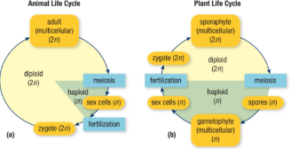
(a) A typical animal life cycle consists only of diploid individuals that produce haploid sex cells.
(b) Plant life cycles alternate between a diploid sporophyte generation and a haploid gametophyte generation.
The first requirement for life on land was the ability to prevent water loss. When exposed to dry air and warm temperatures, unprotected living cells quickly lose water through osmosis and evaporation. Plants developed a flexible, waxy cuticle on their outer surfaces that effectively prevents water loss
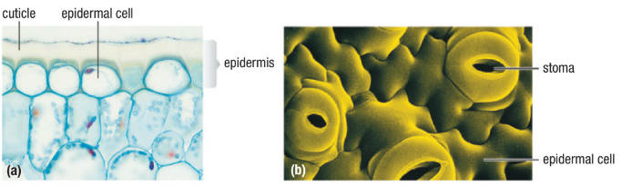
(a) Almost all plant surfaces produce a waterproof, waxy cuticle.
(b) Stomata are small openings in the epidermis that allow gas exchange with the air. Most leaves have thousands of stomata per square centimeter.
➤The bryophytes are the simplest of land plants. This group includes the mosses, liverworts, and hornworts.
➤The peat mosses, of the genus Sphagnum, may be the most numerous plants on Earth.
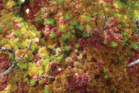
Various species of sphagnum
Moss forms a thick covering in this bog.
The gametophyte generations of bryophytes produce swimming sperm in structures called antheridia (singular: antheridium) and eggs (in structures called archegonia (singular: archegonium). Bryophytes can therefore only live and reproduce in places with at least occasional wet conditions, such as rains or heavy dew.
.png)
The sporophytes grow a tall stalk that bears a structure called a sporangium (plural: sporangia), in which haploid spores are produced.
These tiny spores are easily carried by winds and dispersed over a large area.
.png)
Some moss gametophytes can also reproduce asexually. Small clumps of photosynthetic haploid cells called gemmae (singular: gemma) are produced in cup-shaped structures on the surface of the gametophytes. The gemmae are dispersed by splashes of rain and grow into new gametophytes.
The Life Cycle of a Moss
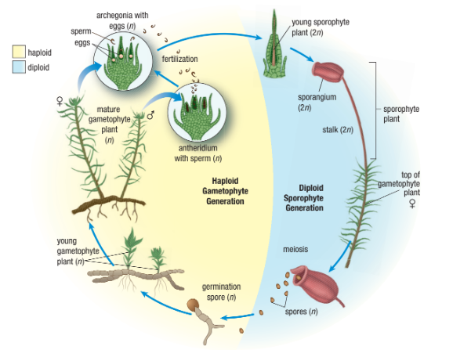
In order to fertilize the eggs, sperm must swim through water on the surface of the gametophytes.
The next major adaptation by land plants was the development of vascular tissue.
Vascular tissue consists of the xylem and phloem. It is specialized for the transportation of water and nutrients. Plants with vascular tissue can grow to great heights, thereby accessing more sunlight.
.png)
The lycophytes (club mosses) and pterophytes (ferns and their relatives) are groups of seedless vascular plants that still have many characteristics of the earliest vascular plants.
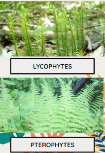
.png)
The life cycle of a fern
Note that the sporophyte is photosynthetic and much larger than the gametophyte. The gametophyte (less than 1 cm across) is greatly enlarged in this diagram.
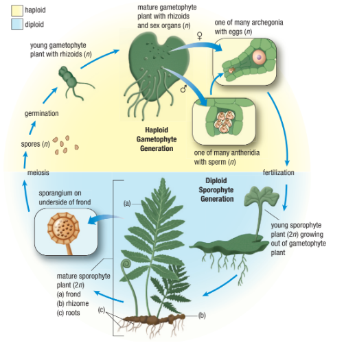
Today almost all lycophytes and pterophytes grow in the shadows of seed plants. In most of these plants, the entire male gametophyte is carried from one plant to another by the wind or by animals, instead of traveling through water. Seed plants are therefore not restricted to reproduction over short distances in wet conditions, and they have become the dominant land plants on Earth.
Pollen grains are waterproof capsules that contain microscopic haploid male gametophytes. Pollination occurs when the male gamete in a pollen grain penetrates an ovule containing a female gametophyte. The male gamete fertilizes the egg, producing a diploid zygote. This diploid zygote, or embryo, becomes a seed.
Seeds contain a food supply for the embryo inside a seed coat.
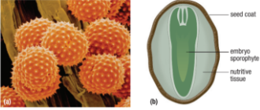
(a) Pollen grains are microscopic and have variable shapes and surface features.
(b) Seeds contain a young sporophyte embryo, a nutrient-rich tissue, and an outer protective coating.
The food supply within the seed provides the young plant embryo with the nutrients it needs to grow a small root, a stem, and leaves before it is able to rely on photosynthesis. This food supply is a concentrated mix of starch, plant oils, and some protein. It is therefore a very important food source for many animals—including humans.
Gymnosperms include coniferous trees such as pines, spruce, cedars, junipers, and other less well-known groups of plants including cycads and ginkgoes.
Cones are the reproductive structures of conifers. Male cones produce and release pollen, and female cones produce eggs.
.png)
Gymnosperms have large, shallow root systems that form a mycorrhizal relationship with symbiotic fungi. Many
gymnosperms are well adapted to resist hot dry summers and cold winters.
Gymnosperms are very valuable. They provide about 85 % of all wood used in construction and furniture manufacturing and are also the source of almost all pulp
and paper.
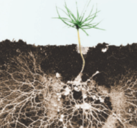
This cross-section shows the mycelium of the fungus extending far beyond the root system of the seedling.
The boreal forests of northern Ontario are dominated by spruce trees and are a major source of lumber pulp and paper. They also support many large ecosystems—they are home to many species of wildlife.
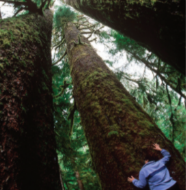
The Three Sisters
More than 90 % of all modern plant species are angiosperms or flowering plants. The more than 260,000 species of angiosperms dominate the modern world of plants. With the exception of coniferous trees, mosses, and ferns, virtually all familiar trees, shrubs, and herbaceous plants are angiosperms.
.png)
Flowers perform the same function as cones in producing both pollen and eggs. However, in female flower parts, the eggs are protected in an
enclosed ovary. After fertilization, seeds form within the ovary and the outer tissues
of the ovary become a fruit. The main function of the fruit is to help disperse the seeds.
➤There are two types of seeds in angiosperms. Each seed contains either one (“mono”) or two (“di”) cotyledons.
➤Cotyledons are structures that store food used by the growing embryo during germination.
.png)
When plants colonized land more than 400 million years ago, it was one of the most dramatic events in the history of life on Earth. It created a diversity of living habitats and food sources for countless terrestrial animals, including you. Unfortunately, this diversity is threatened by human actions. The most widespread threat is climate change, which has the potential to affect plants living everywhere on Earth.